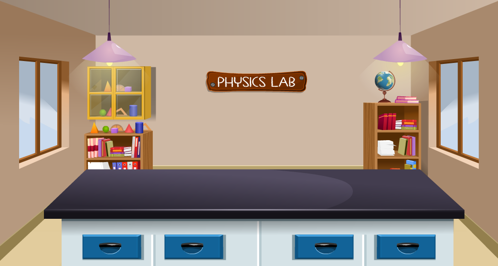
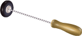

V1
V2
 00
S
00
S
No beats are produced when the frequencies of the tuning forks are the same.
It will be challenging to count the number of beats produced per second if the difference between the frequencies of tuning forks is greater than two or three.
Number of beats in 10 seconds=20, Number of beats in 1 second=2
Number of beats in 10 seconds=12, Number of beats in 1 second=1.2